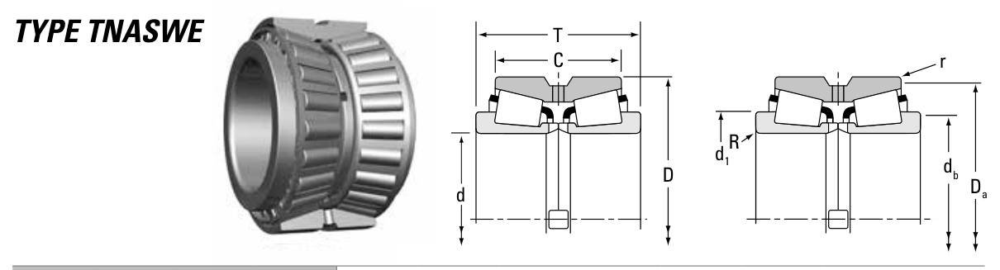

Original catalogue drawing - Timken TRB Catalog, page 666

Scanned from the manufacturer catalogue page listing this part number. All part numbers printed on that table share the same drawing.
Scale cross-section
Blue = inner / outer ring, yellow = rolling element. Drawn to scale from this part's own
dimensions for selection reference only - not a manufacturing or assembly drawing.
Dimension table (mm / inch)
Symbol
Dimension
mm
inch
d
Bore diameter
142.875
5.625
D
Outside diameter
200.025
7.875
T
Overall assembly width
93.665
3.6876
C
Cup / outer-ring width
73.025
2.875
r
Chamfer (min)
0.8
0.0315
Notes
Tapered roller bearings are cone / cup assemblies; cone and cup weights are listed separately and the total is their sum. Weights are given in kg. Load ratings are shown in both the original catalogue units and the converted value (1 N = 0.2248 lbf). Data is provided for selection reference only - confirm against the latest official catalogue before ordering.
Main dimensions
Bore d (mm)
142.875
Bore d (in)
5.6250
Outside dia. D (mm)
200.025
Outside dia. D (in)
7.8750
Overall width T (mm)
93.665
Overall width T (in)
3.6876
Cup width C (mm)
73.025
Cup width C (in)
2.8750
Load ratings & speeds
Basic dynamic load rating Cr (lbs)
112000
Basic dynamic load rating Cr (N)
499000
Dynamic rating C1 (N, ISO)
499000
Dynamic rating C1 (lbf, ISO)
112000
Radial rating C90 (N)
74300
Radial rating C90 (lbf)
16700
Thrust rating Ca90 (N)
42800
Thrust rating Ca90 (lbf)
9610
Factor e
0.34
Factor Y1
2.01
Factor Y2
2.99
Factor K
1.74
Weight
Weight (kg)
8.43
Mounting dimensions (fillets / shoulders)
Shaft fillet R max (mm)
3.5
Housing fillet r max (mm)
0.8
Shaft shoulder db (mm)
158.0
Housing shoulder Da (mm)
193.0
Bearing life (ISO 281 basic rating life)
C / P
Equivalent load P (N)
L10 (106 rev)
L10h at 500 rpm
4
124,750
102
3,386
6
83,167
392
13,083
8
62,375
1,024
34,133
10
49,900
2,154
71,814
15
33,267
8,323
277,449
Basic rating life per ISO 281: L10 = (C/P)10/3 with C = 499,000 N. Hours = L10 x 106 / (60n). Life-modification factors for lubrication, contamination and temperature (aISO) are not included.
Source & traceability
Brand
Timken
Source catalogue
Timken Tapered Roller Bearing Catalog (2016)
Catalogue page
p.666 (dimensions)
Series type
TNASW
ISO dynamic rating C1, Timken C90 / Ca90, static rating C0, geometry factors and assembly weight.
Send us the quantity you need and we will come back with price and
lead time, normally within 24 hours. Equivalent parts from other brands can be quoted at the same time.